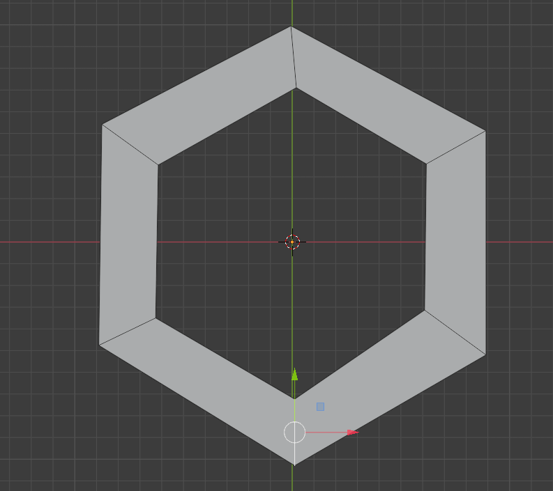
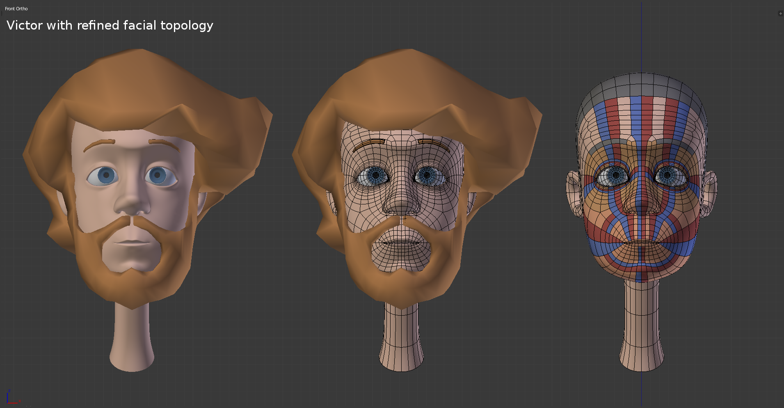

Lektion 3 - Geometrie verstehen
Inhalt
- Topologie
- Geometrie from Scratch
- Edge Flow
- Editor-Anordnung
1. Topologie
Das Verhältnis zwischen Punkten, Kanten und Flächen, also die Zuordnung, welcher Eckpunkt mit welchem anderen eine Kante bildet und welche Kante mit welchen anderen Kanten eine Fläche Bildet, nennen wir im Folgenden Topologie.
Die im letzten Kapitel gezeigten Modellierungstechniken verändern entweder die Topologie gar nicht (Position, Rotation, Skalierung auf Selektionen von Punkten, Kanten oder Flächen) oder aber sie erzeugen nach festen Regeln neue Topologie und haben ein “konsistentes” Mesh zur Folge (Bevel, Extrude, Loop-Cut, diverse Modifier).
Neben diesen Werkzeugen gibt es auch Werkzeuge, mit denen direkt die Topologie eines Modells erzeugt oder geändert werden kann. Ein paar davon werden hier beschrieben.
Polygone, Tris & Quads
Blender kann grundsätzlich mit Flächen (Polygonen) umgehen, die aus beliebig vielen Eckpunkten und Kanten bestehen. Beim Modellieren ist es aber von Vorteil, darauf zu achten, möglichst nur Vierecke zu verwenden. Oft werden diese auch Quads genannt, im Gegensatz zu Dreiecken, die oft mit Tris bezeichnet werden.

Bild oben: Drei Polygone - vlnr.: Ein Tri, ein Quad und ein Fünfeck.
Objekte nur aus Quads aufzubauen ist insbesondere bei der Verwendung des Subidvision Modifier ratsam, da die Verwendung anderer Polygone (Tris, Fünfecke, …) dazu führen kann, dass die Oberflächen ungewünschte Strukturen aufweisen.
2. Geometrie from Scratch
Oft soll Geometrie frei “aus dem Nichts” eigefügt werden, beispielsweise mit Hilfe eines Hintergrundbildes, das als Modellierungsvorlage verwendet werden soll.
Eine Konstruktionsweise ist es, Bänder von Quads in eine 2D-Ansicht (z.B. Num 5, Num 1)
zu Zeichnen. Dies kann mit einer selektierten Kante durch fortgeführtes Extrudieren (E), Rotieren (R) und Skalieren (S) erfolgen.
Eine Abkürzung zu dieser Vorgehensweise ist es, im Edit-Modus Kantenbearbeitung zu aktivieren und mit einer selektierten
Kante jeweils mit Ctrl+RMB an die neue Position zu klicken.
Es wird dann jeweils die aktuelle Kante extrudiert und die
Kanten-Rotation sowohl der neu hinzugekommenen wie auch der alten Kante angepasst, dass ein “wohlgeformtes” Polygonband entsteht.

Das oben gezeigte geschlossene Band aus Quads ist durch Folgende Befehlssequenz entstanden:
Vorbereitung
- Neue Szene laden (File -> New)
- In orthografische Seitennsicht wechseln (
Num 1oder Y-Achse im View Gizmo) - Cube auswählen (
LMB) - In den Edit Mode wechseln (
Tab) - Sämtliche Würfel-Geometrie auswählen und löschen
(
Alt + A,X→ Vertices)
Erste Kante einfügen
- In den “Vertex Select” Modus wechseln (
1) - Mit
Ctrl+RMBzwei Vertices einfügen, diese werden automatisch mit einer Kante verbunden.
Quad-Band malen
- In den “Edge Select” Modus wechseln (
2) - Mit
LMBdie erste und einzige Kante selektieren - Mit
Ctrl+LMBjeweils an die Position klicken, an die aktuelle Kante extrudiert werden soll. - Polygonband durch wiederholtes
Ctrl+LMBzu einem Ring formen
Quad-Band schließen
- Letzte und erste Kante mit
Shift+LMBselektieren F(für Fill) verbindet diese mit einem Quad
3. Edge-Flow
Typischerweise wird das o.g. Verfahren auf einem eingefügten Hintergrundbild angewendet, um eine Zeichnung, Fotografie o.ä. nachzumodellieren. Dabei werden oft mehrere solcher Polygonbänder angelegt, die die Grundlegende Struktur des entstehenden Modells bilden.
Die Entscheidung, an welcher Stelle und wie Bänder angelegt werden sollen ist von mehrere Faktoren abhängig. z.B.
- Optischer Fluss der Struktur
- Gewünschte Polygonzahl des enstehenden Modells (meist gilt: je weniger desto besser)
- Animationseigenschaften des entstehenden Modells. Bei Skelett-Animations können schlecht gesetzte Polygonbänder zu unerwünschten Effekten führen.
Es gibt sicher kein generelles Richtig oder Falsch für das Anlegen eines Polygon-Flows - hier hilft es, viel Erfahrung zu sammeln. Für häufig vorkommende Modelle haben sich aber eine Reihe von Best Practices entwickelt, die in unzähligen Büchern, Web-Tutorials und Videos zu sehen sind - allen voran der Edge-Flow für Gesichter

Beim oben angegebenen Vorgehen, zunächst die wichtigsten Strukturen der zu modellierenden Geometrie als Bänder von Quads anzulegen, ist es wichtig, darauf zu achten, dass die Bänder später auch durch Quads miteinander verbunden werden können - d.h. es müssen sich immer möglichst gleich viele Quads gegenüberstehen. Ansonsten müssten Tris oder Polygone mit mehr als vier Eckpunkten eingefügt werden - dies ist unbedingt zu vermeiden!

Oben stehendes Bild zeigt die typischen drei Edge-Flows eines Gesichts um
- Auge
- Lippen und
- Nase-Kinn-Ring
mit sehr wenigen Polygonen. Es wurde begonnen, die Ringe zu verbinden, was gut möglich ist, weil sich die Quads der drei Ringe passend in Anzahl und Position gegenüber stehen.
Dies kann dadurch gewährleistet werden, dass beim Verbinden der Edge-Loops (mittels Fill)
einzelne Ringe um Polygone erweitert (mit dem Knife) oder verringert werden (Durch Löschen
von Edges).
4. Editor-Anordnung
Die Anwendung des o.g. Verfahrens eignet sich zur Arbeit in einer orthografischen 2D-Ansicht. Um mit diesem Verfahren dreidimensionale Modelle zu erzeugen, bietet es sich an, gleichzeitig in zwei 2D-Ansichten zu arbeiten - z.B. eine Front- und eine Seiten-Ansicht. Damit kann in jeweils einer Ansicht der die grundlegende Topologie, vor allem im Hinblick auf den Edge-Flow gezeichnet werden und in der zweiten Ansicht kann das Gebilde “verräumlicht” werden, indem die Vertices in der Tiefe des Raums verteilt werden.

In obigem Bild wurde begonnen, ein Gesicht nach einer Skizze nachzumodellieren. Dazu wurde ein zweiter 3D-Editor erzeugt. Der linke 3D-Editor zeigt die 2D-Ansicht der Szene von Vorne, der rechte 3D-Editor zeigt die 2D-Ansicht der Szene von der Seite. So kann nach o.a. Verfahren die Topologie in der (linken) Front-Ansicht angelegt werden. Gleichzeitig kann die platte 2D-Geometrie in ein räumliches Gebilde verwandelt werden, in dem in der (rechten) Seitenansicht die Eckpunkte der Polygone mit Hilfe der Skizze an Ihre Position in der Tiefe verschoben werden.
Das Ändern des Editor-Layouts von Blender ist u.A. in den Abschnitten Teilen und Zusammenfügen von Fenstern in Areas - Blender Manual beschrieben.